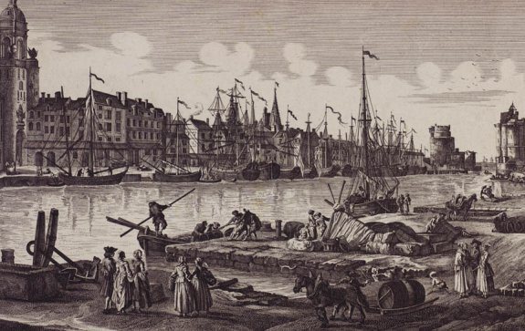
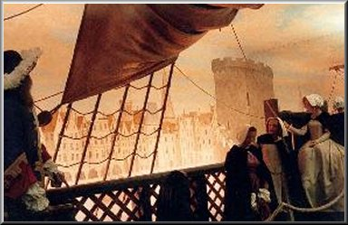
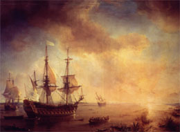
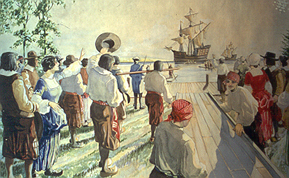

|

French version
HOME
ORIGINS
ENGAGÉ
MARRIAGE
TRAVEL
FAMILY
DEATH
SÉBASTIENNE
DESCENDANTS
SOURCES
SIGN
MY GUEST
BOOK
| |
|
FROM LA ROCHELLE TO
QUEBEC
|
| BEFORE THE
DEPARTURE FROM LA ROCHELLE |
| In
the spring of 1647, shortly after their marriage, Mathieu and Sébastienne
prepare to immigrate to New-France, and this under conditions which are
not necessarily easy.
A
distance of 3,600 miles separates the ports of La Rochelle and Quebec. The sailing ships of the time can cross the Atlantic in
approximately nine weeks. But
all depends on the wind: If
it is missing during the voyage, nothing can be done but wait, until it
begins again. This can take
one week or two, and even sometimes more.
Everything that increases the duration of the voyage also
increases its risks.
A
ship captain will write in 1716: "I
travelled seven times to Canada and though I pulled through, I dare to
ensure you that the most favorable of these voyages gave me more white
hairs than all other voyages which I made elsewhere."

The
ship is docked in the basin of the port, all sails rolled up. There is great animation, many people come and go, occupied
with the loading.
The other
travellers arrive at La Rochelle, they come from Paris or other provinces,
the majority on foot, some in coaches.
Paris is 380 kilometers away, but travelling by foot at that time
is quite common. These
travellers await the departure of the ship in inns.
It happens that young workers celebrate a little too loudly and
the authorities need to lock them up at the Town hall until the
last moment.
For
ordinary people like Mathieu and Sébastienne the cost of the voyage is
about 75 pounds each (more than one year of wages for a worker), and, for
this price, they receive only the minimum service.
It is preferable that they carry the least perishable and most
nutritive foods possible.
|
|

|
| LET US VISIT THE SHIP |
|
The
ship is not very large, it is approximately 37 to 50 meters in length
and 8 to 15 meters across. Generally,
there are between 100 to 300 passengers piled up in the in the ship
during all of the voyage.  THE
HOLD
THE
HOLD
The
stones in well fixed wicker baskets, is the ballast which ensures
the good behaviour of the ship on water.
Also well fastened powder barrels, any vessel being
provided with guns to protect itself at sea.
Thus during long months, Mathieu and Sébastienne will live on
this powder house.
Above
it there is the capharnaüm,
that is to say where the luggage of the passengers or various articles
to be delivered to the colony are stored.
There
are also the reserves of food.
The maritime law obliges the captain to carry 60 rations and 2/3
of water barrel (66 liters) for each passenger. It is what is needed to
live during 60 days. The
menu: "sailor
biscuits", bacon, peas, salted cod or dried, harang, olive oil,
butter, mustard, vinegar, wine, brandy and candied fruits. If one wants other things, it is necessary to add it to his
luggage.
In
all that the drinks are significant.
As the fresh water quickly becomes fermented, viscous and
furnished with small larvae, one embarks cider, replaced Sunday by wine.
In
any case, Mathieu and Sébastienne will have enough to eat and drink,
provided that the crossing does not take more than two months.
In 1662, a ship will take nearly four months and forty passengers
will die of hunger and thirst.
Of
primary importance in the hold is that nothing moves:
all the weight of the ballast, of the powder barrels, the goods
must be evenly distributed, if not, the ship capsizes and sinks quickly |
|
THE ENTREPONT OR "SAINTE-BARBE" |
|
For
the captain and the dignitaries, there are some cabins, but for the
passengers there is only the entrepont.
For the latter, no reserved places: the luckiest sleep in
hammocks, the others on the ground.
The
entrepont is exiguous, not much higher than a meter sixty.
The passengers cannot thus walk upright, they must constantly be
bent. They cannot move
using a candle either because of the fire hazard and must remain in the darkness.
The place almost does not have any openings, the air is rancid
and there is and abominable stink all around.
At night, the passengers sleep in the cold and humidity,
at best on hammocks which follow the rolling of the waves, in the midst
of rats and the lamentations of those which are sick
A
partition separates this dormitory from another part of the entrepont
where the stable is, that is to say the animals which one sends
to the colony, and of which a part will finish on the table of the
captain and his guests. The odors and the noises coming from the animals are easy to
imagine.
There
is no dining room. The
passengers eat where they are when it is mealtime.
No heating system either. The
single stove is reserved for the cooking of food and, if the ship is
shaken too much, one eats cold.
It
is a disorder of people and luggage, one walks literally on each other,
and this, for weeks.
The
Nau Jesuit will write in 1734: "the
only sight of Sainte-Barbe where we were to lay down during the crossing
disconcerted us all [.... ] We were pressedlike sardines in a barrel
against each other in this
obscure and repugnant place. We
could not go to our beds without banging our head and the legs at least
twenty times. The propriety
did not enable us to even undress ourselves ".
|
|
|
|

|
| THE DEPARTURE |
|
The
passengers settle as best they can and then get off the boat again to
make the last purchases, or to say their good-byes to the family, or to
listen to a last mass.
When
the wind is favorable a drum roll informs that the ship will be detached
from the port to enter the first stage before taking to the sea.
One deploys certain sails, everyone re-embarks, one shot from a
gun: it is the blow of
departure.
 The
ship leaves the port slowly, the wind pushing it on its way.
Mathieu
and Sébastienne start to see the sea.
But all can be stopped if the wind falls and the ship can remain
thus, next to the city, one day or two.
Then when the wind returns, it gains the open sea after having
passed close to the island of Ré. |
| DANGERS OF THE CROSSING |
| The
passengers are confined in the Sainte-Barbe, and, on stormy days, they
cannot even get out on the bridge.
They continuously breathe the odors coming from all
this crowd which does not wash itself and does not change clothing, as
well as the odors of the close-by stable.
The floor of the entrepont is seldom cleaned.
A “Fille du Roy”, in 1664, will complain about the deplorable
conditions of a 87 long days crossing, and will testify that the sea
water brings back the excrements of the animals in the entrepont.
In 1756, , the Leopard will arrive full of sick soldiers
complaining that the floor of the entrepont was cleaned only one time in
two months.
 The sea water is
only 10 degrees Celsius, it wets all, the berths, the food. A constant moisture freezes people. The ship cracks from everywhere, the movement and the noise
is ceaseless. The sea water is
only 10 degrees Celsius, it wets all, the berths, the food. A constant moisture freezes people. The ship cracks from everywhere, the movement and the noise
is ceaseless.
DISEASES
The
majority of the passengers, not having the marine foot, suffer from sea
sickness. But there are
also other diseases which develop like the scurvy, variola, measles, the
dysentery but especially typhus which one calls the "disease of
the ships or crimson fever".
They are often due to a lack of hygiene.
The fresh water being limited on the ship, the passengers do not
wash themselves and the promiscuity in which they live accelerates the
propagation of the disease. It is frequent that a simple cold is transformed into a true
epidemic.
It
should be said that the food does not help to get better either.
One nourishes oneself with smoked fish and salted bacon while
hoping to make a good catch fishing.
When one cannot have meat, one eats corn semolina soups, of oats,
pea or corn. One brings
also a good number of wafers that one eats at the end of twenty or
thirty days even when they are pricked with worms.
The fresh water is contained in large wood barrels, but as time
goes by it becomes brownish and small larvae begin to appear on the
surface. The passengers are
obliged to drink it, sometimes by gripping their nose, since it smells
so bad. The more the
crossing takes time, the more the water is rationed.
Under
these conditions death is frequent.
The historians estimate that at least 10% of the passengers die
during the crossing, but it is often more.
In the extreme cases it can happen that the few useful people for
the navigation of the boat are hardly sufficient.
In 1732, of the 154 people on board a ship, at least 100 will
die. The Dead are wrapped
in cloth and thrown overboard into the sea, with a canon ball attached
to their feet.
STORMS
Among
the lugubrious stories which the floods know, there are the storms. In all the history of the colony there are several cases in
which ships caught in storms are ruined and lost
In these accidents, the ship can disappear with all souls aboard.
The most famous example of this is that of the Chameau which,
opposite the Louisbourg, where all are delighted by a good crossing, is
caught by a storm: the ship
breaks against the rocks, 316 passengers perish and a treasure of
300,000 pounds is lost (divers will recover a small part of it in 1970).
CAPTURE
Among
the other dangers of the sea, the ship can be captured.
In times of war, several ships sailing towards New-France
are captured by England, which creates famine and a shortage of goods in
the colony, still too dependent on the motherland.
But in times of peace, the risk of capture exists also by
pirates and corsairs that are in the neighbourhood.
The
corsairs are decent people who have a licence from the king to
seize foreign ships: the
boat is seized with all its possesions, but one deals in this case with
career soldiers who know basic manners.
The pirate works without a licence, on his own account,
and does not follow any law. In
both cases the passengers are not more advanced:
all that they have (trunks, linen, jewels, provisions) passes to
the winner, who resells it in a port or throws to the sea what does not
appeal to him. The
prisoners are ransomed and wait, the majority of the times in the
Antilles, until their families put together enough money.
These
captures or these shipwrecks ruin the travellers who transport with them
much goods and are a disaster for the colony for which any arrival of
goods is significant.
|
|
|
| THE CONTINUATION OF THE VOYAGE |
| It
seems that nothing too annoying arrives at the time of the crossing of
Mathieu and Sébastienne.
To
pass the time, the sailors organize sometimes parties on the
bridge. They play music and the passengers take part in the dance.
In the course of the day, they walk on the bridge, speak among
themselves, the most educated read or write.
The men devote themselves to games of chance:
card games, dice, chess or checkers
But
the greatest distraction of the crossing remains without any doubt the baptism
which takes place on the Grands Bancs, in the surroundings of
Newfoundland. The majority
of the passengers who cross the Atlantic for the first time must pay a
price or else one throws them in a bucket full of water.
When an iceberg is met, some leave by small boats to climb
on the glacier and gather fresh water.
When the sea is calm, some bathe in the open ocean, for the
pleasure and not for health, since the beneficial effects of sea bathing
are not recognized yet. |
| FINALLY THE SAINT-LAURENT
GULF |
 Lastly, after two months
on average of crossing in open sea, the passengers see the coasts of the
St. Lawrence gulf. One
should not be delighted too early:
Quebec is still very far and it is while entering the gulf that
the danger is perhaps the greatest.
It is very dangerous for navigation:
unexpected gusts of wind, very frequent fogs, many reefs.
Because of its tumultuous water, those which did not have sea
sickness during the crossing, almost always have it while arriving here. |
| THE NORDET |
|
The
voyage is still long. From
Cap Breton to Quebec, one
needs two or three weeks; more
if the wind is missing. Also,
to go up the river there is a particular wind which one needs, the nordet.
The
ship makes a stopover of a few days at Gaspé to fill the tanks
with fresh water and to supply itself with vegetables, because Gaspé
maintains several kitchen
gardens to feed the travellers.
While
penetrating in the river the ship enters a marine cemetery.
From Anticosti island to Quebec the way is marked with tragic
memories. The historian Jean Lafrance made an inventory for the French
Regime: it accounts for 22
significant shipwrecks, of which that of the fleet of Walker where a
thousand persons perished. What
remains to be travelled by Mathieu and Sébastienne is thus not restfull.
As
long as the nordet pushes the ship upstream, all goes well.
But if it ceases blowing, everything stops. The ship is immobilized for days while waiting for another
push of the nordet.
Here
Mathieu and Sébastienne are just off the coast of Tadoussac: it is a long time the outer harbour of Quebec, for captains
not daring to risk themselves upstream.
One tranships momentary and luggage on boats and, for weeks, it
is a continuous to and fro between Quebec and Tadoussac.
In 1647, it is probably what occurs.
Mathieu and Sébastienne probably arrived in Quebec in a boat
from Tadoussac
But
if their ship goes to Quebec, the captain must be very careful while
penetrating in the archipelago which precedes the island of Orleans,
a significant section of the marine cemetery.
They arrive finally opposite Quebec.
If the boat is infected by contagious diseases the passengers
must prolong their stay on board forty days.
Those which are sick, without being contagious, are kept in the
Hospital l’Hotel Dieu of Quebec, enough time to become healthy again.
It is to say that in order to boast of a voyage without accident,
it is necessary to wait to have both feet firmly on the ground.
 |
|
|
|
We
are unaware of any part of
the voyage of Mathieu and Sébastienne.
But it is certain that the deplorable conditions described above,
were exactly those in which they travelled.
It is the standard of the time, and there is no improvement
during
the next century.
All our ancestors who came to settle in Canada during the 17th or 18th
century had to pass go through it.
If
Mathieu and Sébastienne took the vessel
of the king
(a state-owned property who transports goods and dignitaries as well as
the official mail once per year to the colony) their crossing was not
too long since, in 1647, this vessel made a four month stay in
New-France. Therfore
impliying that it arrived early in the season.
If they travelled on another ship, how long was the duration of
their crossing, knowing that the more the crossing is prolonged, the
more it is difficult?
Unquestionably,
they arrived in Quebec and began a new life in a New-world. |
|
|
|
Small
out of context aside: these
abominable traveling conditions will continue until the middle of the
19th century. The
passengers are regarded as goods with "the inevitable losses".
Following the vast imigration of the Irishmen who arrive sick
from typhus contacted from their motherland and contaminate the local
populations, and with the concepts of good hygiene which start to be
spread, the owners of boats must adjust and offer to their passengers
adequate living conditions. The
life on the boats, which are not dependent of the wind any more thanks
to the driving force of the vapor engine, then changes quickly if one
remembers that only a few tens of years later, at the beginning of the
20th century, one builds floating luxury hotels like the Titanic
Source:
the majority of information of this page concerning the travel
conditions are drawn from Mythes et réalités dans l'histoire du
Québec, Marcel Trudel, Éditions Hurtubise HMH, Cahiers of
Quebec, 2001.
|
|